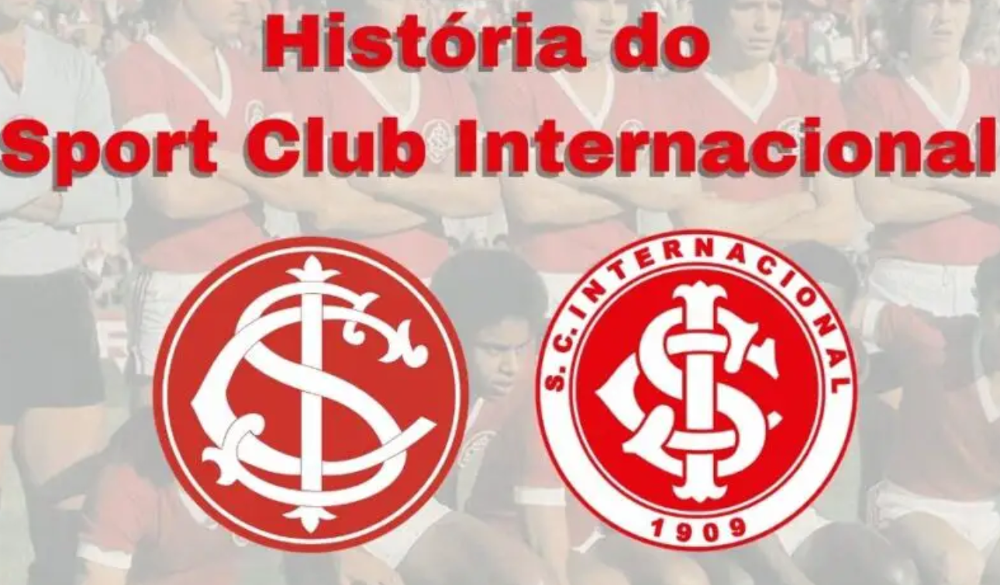
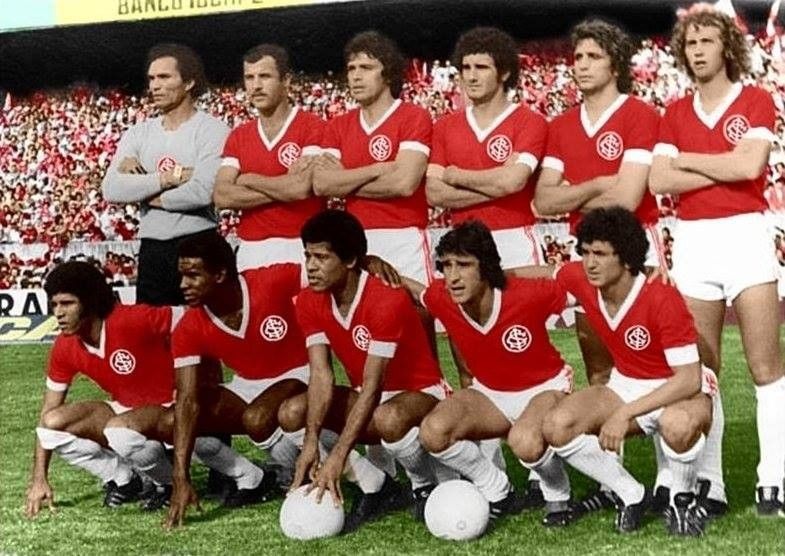
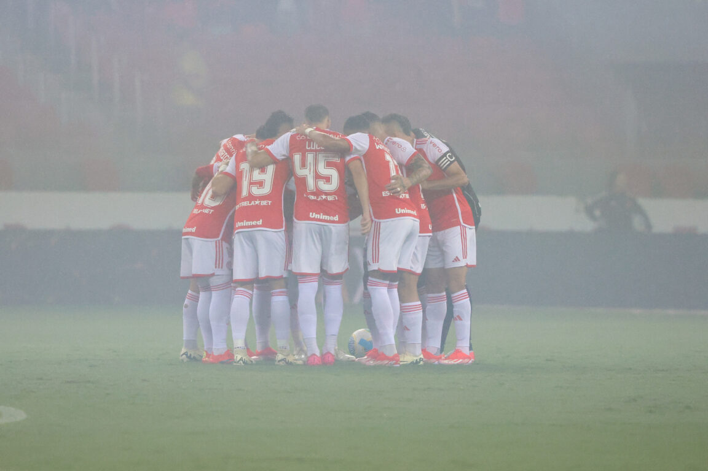

HISTÓRIA
O Sport Club Internacional, conhecido popularmente como Internacional ou simplesmente Inter, é um dos clubes de futebol mais tradicionais do Brasil. Fundado em 4 de abril de 1909, na cidade de Porto Alegre, no Rio Grande do Sul, o Internacional tem uma rica história marcada por conquistas significativas tanto em nível nacional quanto internacional.
Fundação e Primeiros Anos
O clube foi fundado pelos irmãos Poppe — Henrique, José e Luiz — que, sendo imigrantes italianos, enfrentaram dificuldades para serem aceitos em outros clubes da cidade que tinham restrições de entrada para estrangeiros. Assim, decidiram criar um clube inclusivo, aberto a todos. O nome "Internacional" foi escolhido para refletir essa abertura.
Consolidação e Primeiros Títulos
Nos primeiros anos, o Internacional se consolidou como uma força no futebol gaúcho. Em 1913, o clube conquistou seu primeiro Campeonato Gaúcho, começando uma rivalidade histórica com o Grêmio, seu principal adversário na cidade.
Décadas de 1970 e 1980: A Era de Ouro
As décadas de 1970 e 1980 são frequentemente lembradas como a era de ouro do Internacional. Durante esse período, o clube conquistou três Campeonatos Brasileiros (1975, 1976 e 1979). O título de 1979 é especialmente notável, pois o Inter se tornou o único clube a vencer o Brasileirão de forma invicta.
Infraestrutura e Modernização
O Internacional também é conhecido pelo seu estádio, o Beira-Rio. Inaugurado em 1969, o Estádio José Pinheiro Borda, popularmente conhecido como Beira-Rio, passou por uma grande reforma e modernização para sediar jogos da Copa do Mundo FIFA 2014. Hoje, o estádio é um dos mais modernos do Brasil e um símbolo da grandeza do clube.
Base e Formação de Jogadores
O clube é conhecido por sua forte base de formação de jogadores, com uma academia de jovens talentos que produziu vários jogadores de destaque no futebol mundial. Alguns dos jogadores formados pelo Inter incluem Dunga, Falcão, e mais recentemente, Alexandre Pato e Taison.
Rivalidades
O Internacional tem como principal rival o Grêmio, com quem disputa o clássico conhecido como Gre-Nal. Essa rivalidade é uma das mais intensas do futebol brasileiro e é marcada por confrontos históricos e muita paixão dos torcedores.
Situação Atual
O Internacional continua a ser um dos clubes mais importantes do Brasil, com uma torcida apaixonada e uma presença constante nas competições nacionais e internacionais. A administração do clube tem investido na modernização de sua estrutura e na formação de novas gerações de talentos para manter o legado do clube.
Conclusão
A história do Sport Club Internacional é rica e repleta de conquistas. Com mais de um século de existência, o clube gaúcho se estabeleceu como uma potência no futebol brasileiro e mundial, com uma base de torcedores leal e apaixonada e um compromisso contínuo com o sucesso e a inovação no esporte.